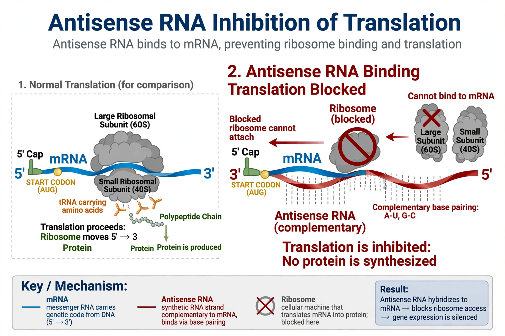

Antisense RNA (asRNA) is a single-stranded RNA that is complementary to a protein-coding messenger RNA (mRNA) with which it hybridizes, thereby blocking its translation into protein. Natural antisense transcripts occur in both prokaryotes and eukaryotes and form part of gene regulation; synthetic antisense molecules underpin a class of drugs called antisense oligonucleotides.
By base-pairing with a target mRNA, antisense RNA can block ribosome binding or translation elongation, trigger degradation of the double-stranded RNA (for example by RNase H in the case of DNA-based oligonucleotides, or RNase III), interfere with splicing, or alter mRNA stability. In bacteria, small antisense RNAs such as MicF regulate porin expression, and plasmid copy number is often controlled by antisense RNA (e.g. RNA I of ColE1).
Antisense oligonucleotide drugs are chemically modified to resist nucleases and reach their targets. Approved examples include fomivirsen (the first, for CMV retinitis), nusinersen for spinal muscular atrophy (which acts by modulating splicing of SMN2 pre-mRNA), inotersen for hereditary transthyretin amyloidosis, and eteplirsen for Duchenne muscular dystrophy. Antisense strategies continue to be explored for cancer, viral infections, and metabolic disease.